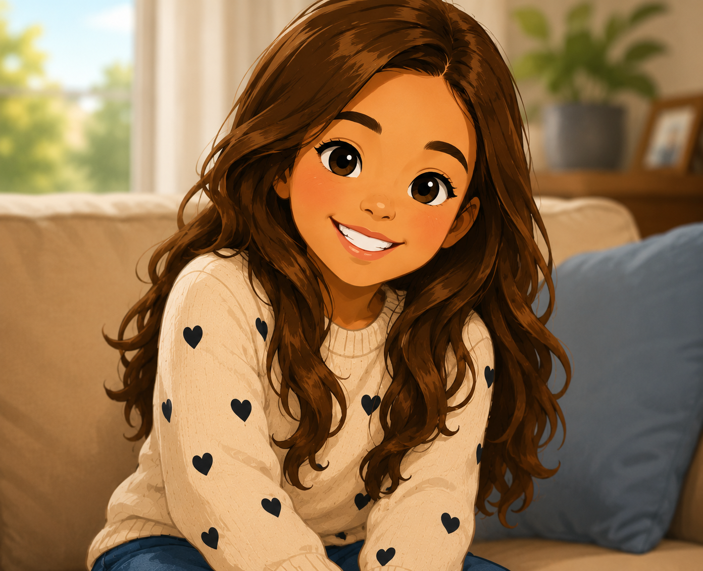

I am 12 years old and enjoy playing cricket, watching movies, and learning about computers. I also love traveling and spending time with my family. Whenever I visit a new place, I collect an authentic souvenir as a memory. My dream is to start a travel business in the future. One of my hidden talents is making Maggie noodles, and a fun fact about me is that I could happily eat Maggie every day!

My name is Siri
I am 14 years old and enjoys painting and expressing her creativity through art. She is also very interested in learning about construction and how buildings are designed and built. Spending time with her family inspires her to work hard toward her goals. She dreams of establishing her own construction company in the future, taking inspiration from her grandfather, Subbarao, whose dedication and achievements motivate her to pursue success and make a positive impact in her community.
We are grand parents
My name is Subbarao, and my wife Devasena and I consider our family to be our greatest blessing. We cherish every moment spent with our children and grandchildren, sharing love, values, and traditions that have been passed down through generations. Our roots trace back to Maharashtra, India, a land known for its rich culture, history, and courage. We take great pride in our ancestry from the birthplace of the great warrior Shivaji Maharaj, whose legacy of bravery and leadership continues to inspire us.